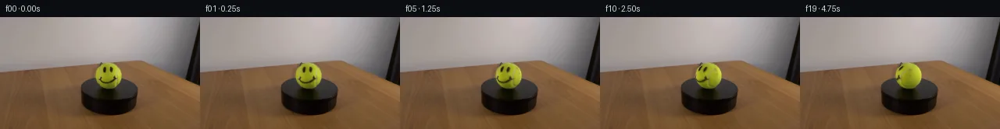
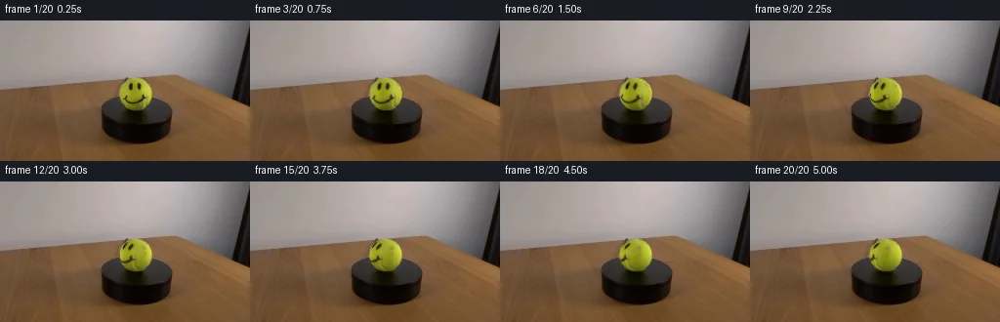
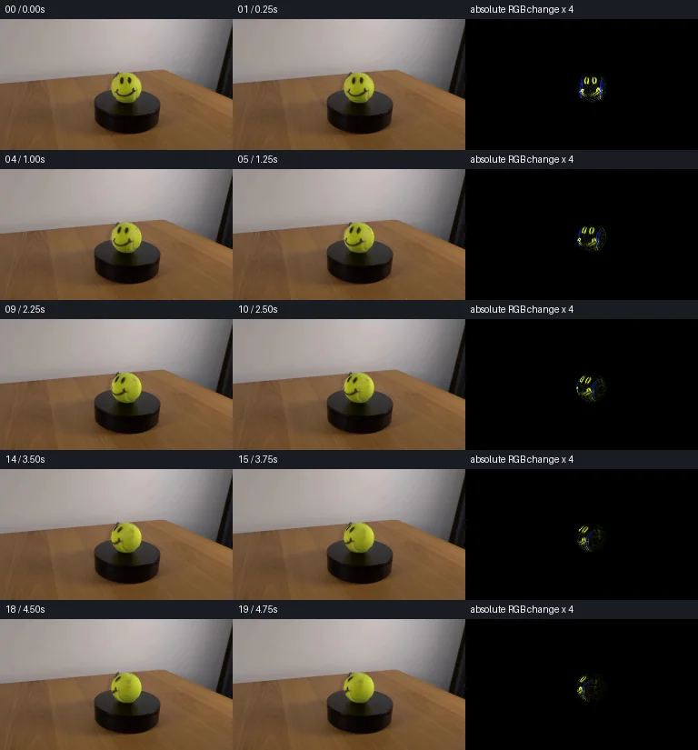

V0 · 初版 · 最终提交
![]()
Observable Generation Trace
把最终像素视频、Harness 冻结的每轮候选、真实工具事件和 Agent 自述放在同一页。可观测证据与模型自述分开标记，避免把“模型说它检查过”误当成真实工具调用。
![首帧]()
Static locked-off single-shot with fixed frame throughout filmed with constant framerate in real-time. The scene shows a realistic scientific demonstration. The scene only contains the described setup and actions. The tennis ball with a smiley face rotates slowly clockwise on the black platform.
首帧显示在左侧播放器初始画面。Track 权限、隔离和 tensor 一致性来自 run manifest，而不是 METHOD.md。
默认勾选初版和最终版；可选其他版本一起同步播放。仅检查图更新的连续重复快照已合并，回退旧视频仍保留为一次修订。
Observable events
来源：events.jsonl + run manifest
此 Track 禁止读取输出图片。逐轮预览由外部 Harness 自动冻结，只用于事后审计，生成 Agent 当时看不到这些页面。
Frozen candidates
每张图来自该 round 的真实 00 / 01 / 05 / 10 / 19 帧

pixels 1e4ed19258c845a1 · code 4f49c810b2b755d5
--- previous/generate.py +++ current/generate.py @@ -0,0 +1,204 @@ +"""Continue one photographed tennis ball with local spherical texture reprojection. +No image-display tools, learned models, network, or external rendering engines. +""" +from pathlib import Path +import json +import numpy as np +from PIL import Image, ImageDraw +from scipy.ndimage import map_coordinates, gaussian_filter, distance_transform_edt +from artifact_io import save + +ROOT = Path(__file__).resolve().parent +CX, CY = 138.65, 75.05 +RX, RY = 16.95, 16.85 +FPS, DEG_PER_SEC = 4, 16 +ELEVATION = np.deg2rad(18) + + +def basis(x, y): + """Smooth fixed illumination, empirically fitted to unmarked source felt.""" + z = np.sqrt(np.maximum(0, 1 - x*x - y*y)) + return np.stack([np.ones_like(x), x, y, x*x, x*y, y*y, z], axis=-1) + + +def sample(array, x, y): + return np.stack([map_coordinates(array[..., c], [y, x], order=1, + mode='nearest', prefilter=False) + for c in range(array.shape[-1])], axis=-1) + + +def rotate(points, axis, angle): + c, s = np.cos(angle), np.sin(angle) + return points*c + np.cross(axis, points)*s + \ + np.sum(points*axis, axis=-1, keepdims=True)*axis*(1-c) + + +def build_scene(source): + yy, xx = np.mgrid[0:144, 0:256].astype(np.float64) + nx, ny = (xx-CX)/RX, (CY-yy)/RY + r2 = nx*nx + ny*ny + nz = np.sqrt(np.maximum(0, 1-r2)) + r, g, b = source.transpose(2, 0, 1) + # Unmarked felt: omit ink, pale seams, and boundary mixed with the background. + fit_mask = (r2 < .88) & (g > 65) & (g > r*.98) & \ + (b/g < .39) & (b/g > .09) + A = basis(nx[fit_mask], ny[fit_mask]) + B = source[fit_mask] + coefficients = np.linalg.lstsq(A, B, rcond=None)[0] + # Robustly downweight dark ink fringes and seam contamination. + for _ in range(6): + residual = B - A@coefficients + weights = np.minimum(1., 11./np.maximum(1., np.linalg.norm(residual, axis=1))) + coefficients = np.linalg.lstsq(A*weights[:, None], B*weights[:, None], rcond=None)[0] + illumination = np.clip(basis(nx, ny)@coefficients, + [53., 57., 12.], [218., 227., 77.]) + albedo = source/illumination + # Extrapolate the last fraction of a pixel at the silhouette from the + # closest photographed interior sample, avoiding a transported wood halo. + confident = r2 < .925 + _, nearest = distance_transform_edt(~confident, return_indices=True) + texture = albedo.copy() + texture[~confident] = albedo[nearest[0][~confident], nearest[1][~confident]] + # A fixed antialias coverage protects the unchanged photographed outline. + # Work by a difference from the angle-zero texture, keeping frame zero exact. + radial = np.sqrt(r2) + alpha = np.clip((1.012-radial)/.052, 0., 1.) + alpha[r2 > 1.] = 0. + normals = np.stack([nx, ny, nz], axis=-1) + return dict(xx=xx, yy=yy, nx=nx, ny=ny, nz=nz, r2=r2, + illumination=illumination, texture=texture, + alpha=alpha, normals=normals, coefficients=coefficients, + fit_pixels=int(np.count_nonzero(fit_mask))) + + +def surface_texture(rotated, scene): + # Inverse mapping: an originally front-facing mark moves left for a + # clockwise turn viewed from above the physical vertical axis. + sx = CX+RX*rotated[..., 0] + sy = CY-RY*rotated[..., 1] + observed = sample(scene['texture'], sx, sy) + # Unseen felt extends the local material with deterministic fine grain. + # It is anchored in material coordinates so it rotates with the ball. + x, y, z = rotated.transpose(2, 0, 1) + grain = (.009*np.sin(81*x+39*y+57*z) + + .007*np.sin(119*x-73*y+31*z) + + .004*np.cos(177*x+141*y-93*z)) + inferred = np.stack([1+grain, 1+grain, 1+grain*1.2], axis=-1) + # Blend only close to the source hemisphere's poorly sampled horizon. … diff truncated; 117 more lines …
pixels 1e4ed19258c845a1 · code a281547514b7b6c5
--- previous/generate.py
+++ current/generate.py
@@ -3,6 +3,9 @@
"""
from pathlib import Path
import json
+import base64
+import re
+import shutil
import numpy as np
from PIL import Image, ImageDraw
from scipy.ndimage import map_coordinates, gaussian_filter, distance_transform_edt
@@ -137,6 +140,7 @@
assert packed.dtype == np.uint32 and packed.shape == (144, 256, 20)
original = np.array(Image.open(ROOT/'first_frame.png').convert('RGB'))
assert np.array_equal(frames[0], original), 'Frame 00 differs from input'
+ assert (ROOT/'frames'/'00.png').read_bytes() == (ROOT/'first_frame.png').read_bytes()
steps = []
union = np.zeros((144, 256), dtype=bool)
ball = scene['r2'] < 1
@@ -159,6 +163,26 @@
allowed = ball | ((scene['xx'] >= 123) & (scene['xx'] <= 155) &
(scene['yy'] >= 94) & (scene['yy'] <= 108))
assert not np.any(union & ~allowed), 'Static scene changed'
+ # Validate the standalone player's actual serialized first frame and patches.
+ html = (ROOT/'index.html').read_text()
+ data = json.loads(re.search(r'const DATA=(.*?);\nfunction unpack', html).group(1))
+ def unpack(encoded):
+ return np.frombuffer(base64.b64decode(encoded), dtype='<u4')
+ decoded = unpack(data['first']).copy()
+ assert np.array_equal(decoded.reshape(144, 256), packed[..., 0])
+ assert len(data['deltas']) == 19
+ for t, encoded in enumerate(data['deltas'], start=1):
+ packet = unpack(encoded)
+ i = 0
+ while i < len(packet):
+ start, count = map(int, packet[i:i+2])
+ i += 2
+ decoded[start:start+count] = packet[i:i+count]
+ i += count
+ assert np.array_equal(decoded.reshape(144, 256), packed[..., t])
+ for name in ['inspection.png', 'transition_check.png']:
+ with Image.open(ROOT/name) as diagnostic:
+ diagnostic.verify()
# Track measured initial eye and smile points through the same rigid motion.
axis = np.array([0., np.cos(ELEVATION), np.sin(ELEVATION)])
landmarks = []
@@ -177,6 +201,7 @@
report = dict(shape=list(packed.shape), dtype=str(packed.dtype),
packing='uint32 0xRRGGBB, axes [y,x,frame]',
png_tensor_equality=True, frame_00_exact=True,
+ frame_00_file_bytes_exact=True, html_player_tensor_equality=True,
frame_count=20, fps=4, duration_seconds=5,
all_changed_pixels=int(union.sum()),
changed_bbox=[int(x.min()), int(y.min()), int(x.max()), int(y.max())],
@@ -196,6 +221,7 @@
scene = build_scene(source)
frames = np.stack([render(source, scene, i)[0] for i in range(20)])
save(frames, ROOT)
+ shutil.copyfile(ROOT/'first_frame.png', ROOT/'frames'/'00.png')
transition_sheet(frames)
verify(frames, scene)
Final visual checks
Harness 保存的最终产物


Agent claims
以下文字由生成 Agent 撰写，不等同于工具证据
The source was inspected with Pillow/NumPy through numeric RGB values, color predicates, component bounds, and coordinate sampling. No image Read/View tools were used.
Use a steady rotation around the ball’s vertical axis, clockwise when viewed from above the platform. The face consequently moves toward the image’s left side and becomes foreshortened. The ball does not roll, translate, bounce, or deform. The platform’s outline and the surrounding scene remain fixed. Assume a modest downward camera angle of 18 degrees and a speed of 16 degrees per second. Reconstruct a surface texture from the source sphere; extend unseen surface using fitted green felt color and deterministic fine texture. Reproject under fixed lighting, with antialiasing at the unchanged ball boundary. Retain the original frame exactly as frame 00. Update only the ball and a small, subdued reflection patch when warranted by numeric checks.
| Frame | Time (s) | Clockwise angle (degrees) | Event |
|---|---|---|---|
| 00 | 0.00 | 0 | Exact original image; face looks toward camera. |
| 01 | 0.25 | 4 | Small leftward movement of surface markings. |
| 02 | 0.50 | 8 | Both eyes and smile remain clear. |
| 03 | 0.75 | 12 | The right seam moves inward. |
| 04 | 1.00 | 16 | Face turns continuously left. |
| 05 | 1.25 | 20 | Mild horizontal foreshortening. |
| 06 | 1.50 | 24 | Left eye approaches the left side. |
| 07 | 1.75 | 28 | Seam and felt rotate at the same rate. |
| 08 | 2.00 | 32 | Face remains recognizable on the left half. |
| 09 | 2.25 | 36 | Smile compresses toward the left. |
| 10 | 2.50 | 40 | Increasingly oblique view of face. |
| 11 | 2.75 | 44 | Right seam crosses the front half. |
| 12 | 3.00 | 48 | Left eye begins approaching silhouette. |
| 13 | 3.25 | 52 | Face markings continue smoothly toward rim. |
| 14 | 3.50 | 56 | Increasing occlusion by the ball’s curvature. |
| 15 | 3.75 | 60 | Front surface dominated by green felt and seam. |
| 16 | 4.00 | 64 | Smiley is mostly in profile. |
| 17 | 4.25 | 68 | Markings partly occluded near left rim. |
| 18 | 4.50 | 72 | A small portion of face remains visible. |
| 19 | 4.75 | 76 | End at the same constant speed; no extra action. |
Each image is held for 0.25 s, yielding a 5-second, 4-fps sequence. The final sample occurs at 4.75 seconds.
This continuation uses local Python pixel operations: photographic texture extraction, a rigid spherical rotation, inverse texture mapping, fitted stationary illumination, and a small reflection update. It uses only first_frame.png and the motion description in prompt.txt as scene inputs. No external images, masks, engines, learned models, network, or subagents were used. No image Read/View tools were used; source and generated images were inspected numerically through RGB samples, connected components, and pixel differences.
The measured ball is centered at (138.65, 75.05), with projected radii of 16.95 and 16.85 pixels. Each interior image coordinate is mapped to a unit sphere with a positive camera-facing depth. A smooth seven-term RGB illumination field is fitted to 632 source felt pixels, excluding ink, seams, and the silhouette. Repeated robust least-squares fitting reduces contamination from the remaining seam and ink fringes.
Dividing the photographed ball by that field produces a local material texture containing the original smiley, pale seams, and felt variations. The poorly sampled outermost source pixels are extended from their nearest interior samples to avoid transporting surrounding wood into the ball. The unseen hemisphere uses the fitted green felt material with small deterministic sinusoidal grain anchored to the rotating surface. It cannot recover unseen markings from a single image; no additional face is invented.
The sphere rotates steadily at 16 degrees per second about a vertical axis viewed at an assumed 18-degree camera elevation. The physical rotation is clockwise as seen from above. In the camera image, the face moves left, rises slightly with the viewing geometry, and becomes foreshortened near the silhouette. Rodrigues' formula rotates surface normals, and inverse mapping with bilinear sampling transports the source material. The lighting field, ball center, radius, and camera remain fixed.
An antialiased ball mask limits changes to its measured outline. Each frame applies the difference between the current texture projection and its angle-zero projection to the original photograph. This preserves the original photographed silhouette and avoids a global lighting or background change. The darkest contact area beneath the ball stays fixed. A blurred, compressed, low-amplitude version of the ball's RGB change updates its subdued reflection on the glossy platform. All surrounding pixels are preserved exactly.
Frame 00 is copied byte for byte from first_frame.png. Frames 01–19 use angles of 4–76 degrees in 4-degree increments. Samples occur at 0.00–4.75 seconds, and each image is displayed for 0.25 seconds, producing 20 frames at 4 fps and a total playback duration of 5 seconds.
Run python generate.py from this workspace. It requires the already available NumPy, Pillow, and SciPy packages. The provided artifact_io.py handles serialization and the supplied HTML template handles playback.
pixels.npz: pixels, a uint32 array of shape (144, 256, 20), indexed as [y, x, frame]; values are packed as 0xRRGGBB.frames/00.png–frames/19.png: twenty RGB PNGs at 256 by 144 pixels.index.html: standalone embedded-data player at 4 fps, with play, replay, and seek controls.inspection.png: contact sheet of eight sampled frames.transition_check.png: five adjacent-frame pairs with amplified absolute RGB difference panels.verification.json: numerical verification results and rigidly projected face landmark coordinates.OBSERVATION.md: measurements and the event plan written before the generation implementation.The generator verifies all PNG pixels against the packed tensor, the exact original pixels and file bytes for frame 00, and all twenty decoded HTML-player frames against the tensor. It also validates both diagnostic PNGs and checks that changed pixels stay within the ball and its small reflection region.
The completed sequence changes 1,060 pixel positions over the entire animation, with a union bounding box of x=122–155, y=59–106. All pixels outside the permitted ball/reflection region remain identical to the source. The mean absolute ball RGB change between adjacent frames ranges from 3.86 to 8.49 channel levels. Numeric dark-component measurements show the eyes and smile migrating left with progressively narrower projected markings. The contact sheet and transition image were generated as review artifacts; no visual review with an image tool is claimed.